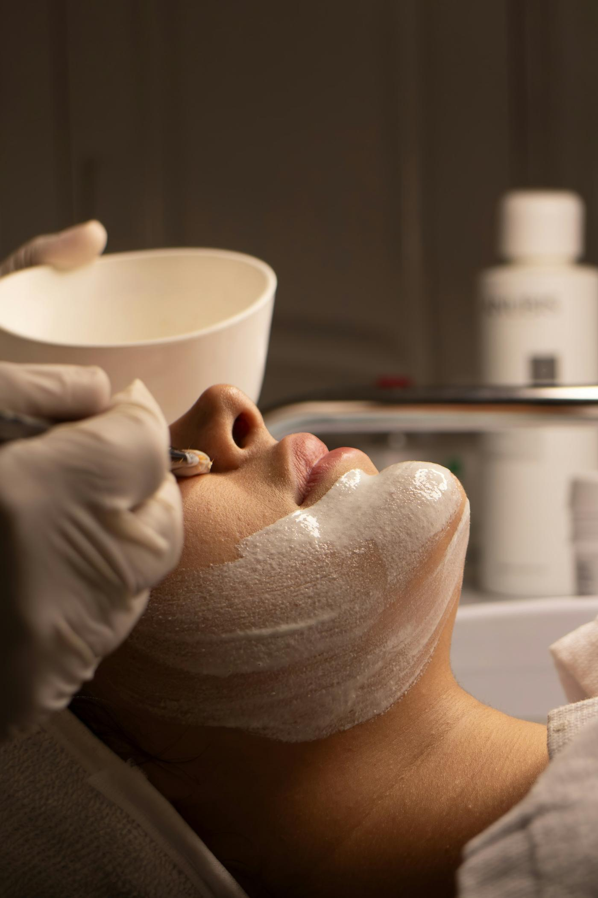
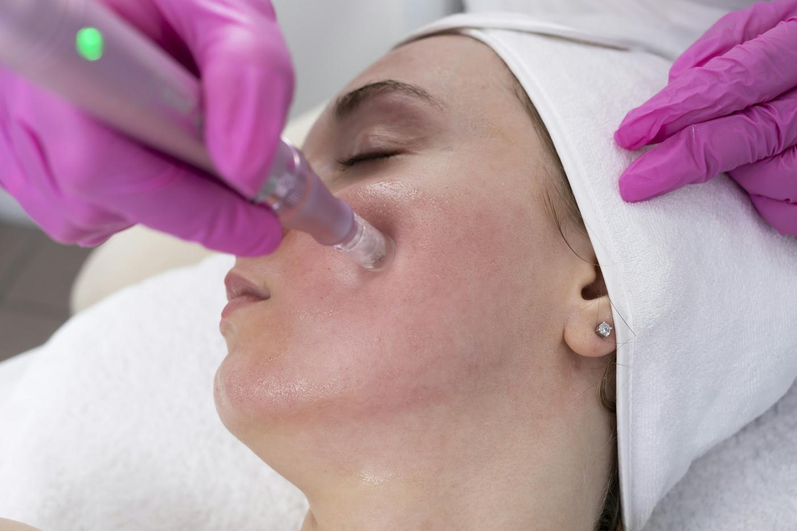
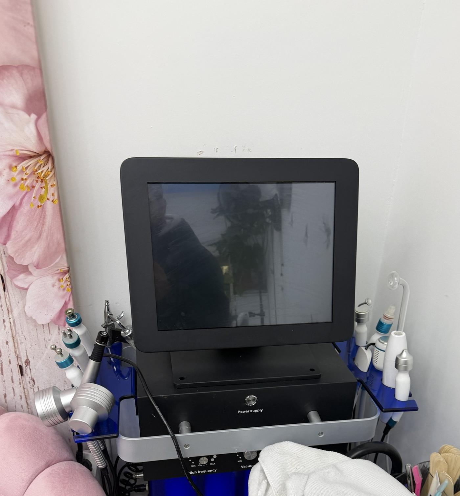
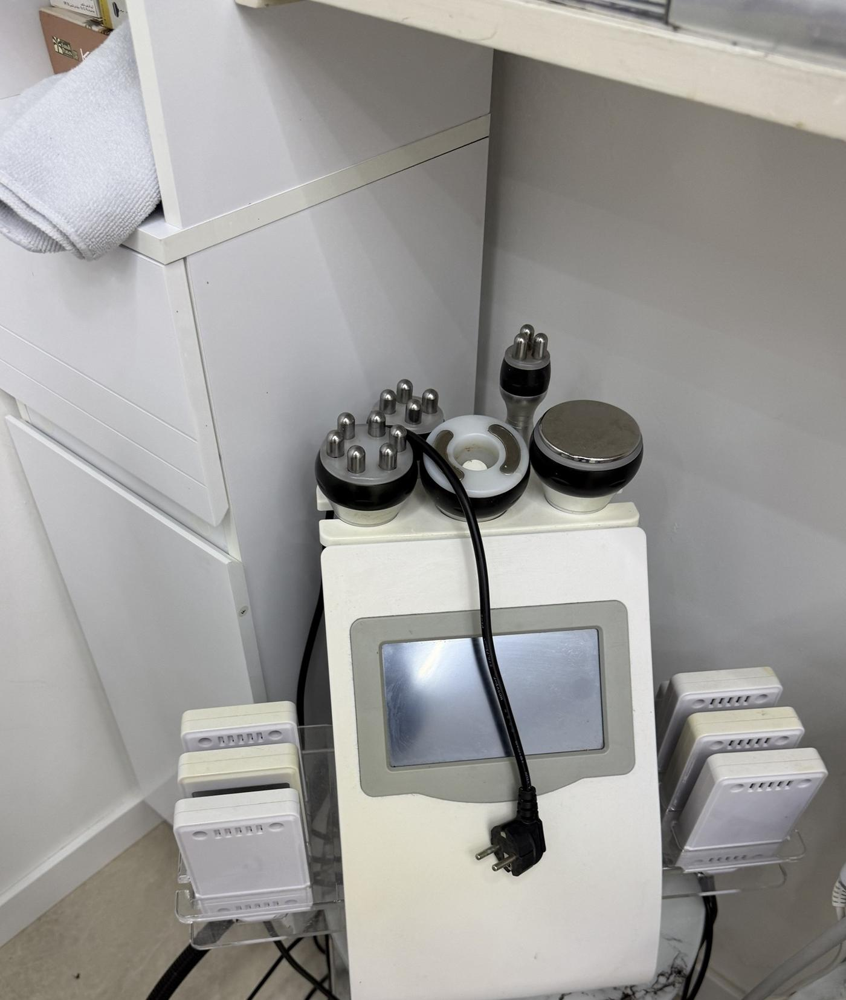
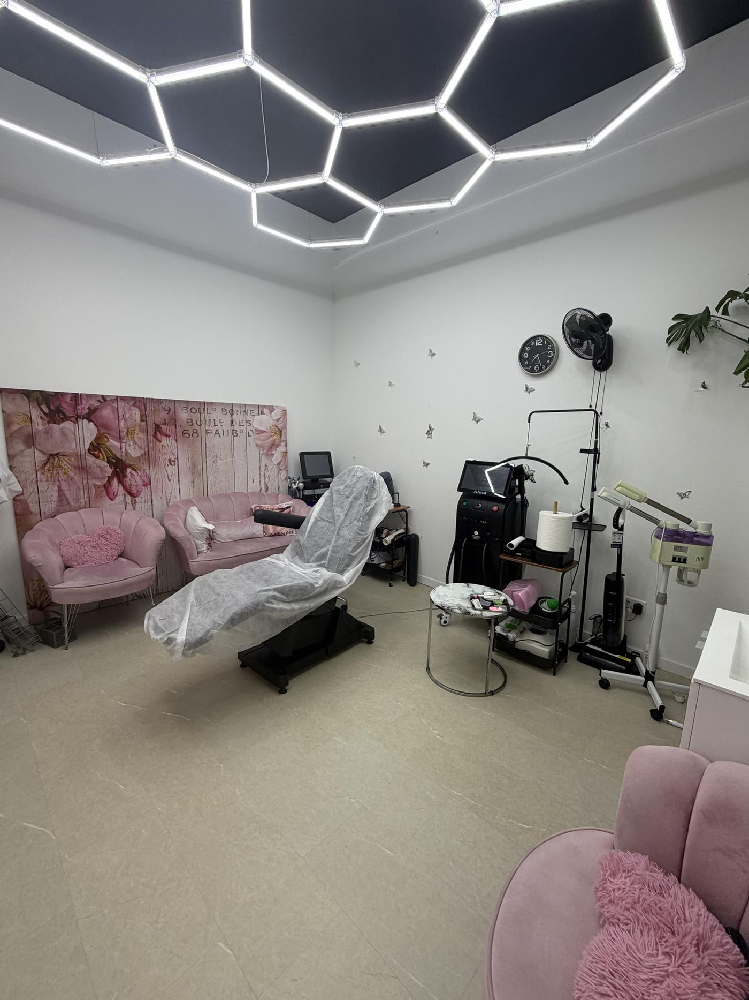
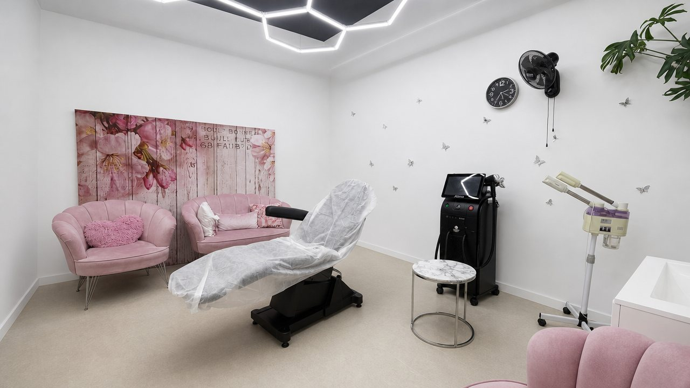

3D huid- & haaranalyse
Een 3D-scan van je huid én hoofdhuid, gelezen door AI: pigment, poriën, vochtgehalte, roodheid en fijne lijnen — plus haardichtheid en haargroei. Je ziet wat er onder de oppervlakte speelt, en na je kuur meten we opnieuw.

Schoonheidsspecialist · Rotterdam
3D-huid- en haaranalyse met AI, hydrofacial, RF-microneedling met exosomen, laserontharing en lip blush — rustig uitgevoerd, altijd na een eerlijk advies. Door Samar Tinawi.
Wie je voor je hebt
Samar Tinawi is schoonheidsspecialist in Rotterdam. Elke behandeling begint met een huidanalyse: wat is er aan de hand, wat kan er nu, en wat heeft tijd nodig. Geen pakketten die je niet nodig hebt. Nederlands, Arabisch en Engels gesproken.
Samar TinawiAya Beauty & Skin · Rotterdam
Welke route past, leest de 3D-scan grotendeels voor ons uit. Vaak is het een combinatie — soms is minder genoeg.
Een 3D-scan van je huid én hoofdhuid, gelezen door AI: pigment, poriën, vochtgehalte, roodheid en fijne lijnen — plus haardichtheid en haargroei. Je ziet wat er onder de oppervlakte speelt, en na je kuur meten we opnieuw.
Aqua peeling met een multifunctioneel hydra-dermabrasieapparaat: vuil en talg worden uit de poriën gezogen terwijl vocht en antioxidanten erin gaan. Reiniging, exfoliatie en hydratatie in één sessie — doorgaans zonder hersteltijd.

Micro-kanaaltjes die je eigen collageen aanzetten, gecombineerd met een serum op maat. Voor littekens van acne, poriën en fijne lijntjes.

Microneedling met radiofrequentie: de naaldjes brengen warmte tot in de diepere laag. Daar trekt bestaand collageen samen én maakt je huid nieuw aan. Voor een strakkere kaaklijn, verslapping en diepere acnelittekens.

Werkstoffen die worden ingezet om het herstel van de huid te ondersteunen na needling of peeling. Bedoeld voor meer stevigheid, een gelijkmatiger tint en minder roodheid op termijn. Resultaten verschillen per persoon.

Gerichte kuur voor pigment, doffe plekken en een ongelijke tint — gezicht, hals of lichaam. Opgebouwd in stappen, met thuisverzorging ertussen.

Langdurige haarvermindering met een medische laser — gezicht, oksels, benen of bikinilijn. De 3D-scan meet je haardichtheid vooraf, zodat je het verschil per sessie zwart-op-wit ziet. Altijd eerst een testvlek.

Zachte pigmentatie die de eigen lipkleur terugbrengt en de lijn scherper maakt. Natuurlijk van dichtbij — geen harde rand, geen felle kleur.

Geen van deze apparaten doet alles. Daarom staan ze er zes: de scan bepaalt welke aan gaat, en in welke volgorde.

Fotografeert je huid in drie dimensies en zet er meetwaarden op: pigment, poriën, vocht, roodheid, fijne lijnen — en haardichtheid op de hoofdhuid. Bepaalt het plan en meet het resultaat terug.
Huid + hoofdhuid · nulmeting en hermeting

Aqua peeling: zuigt vuil en talg uit de poriën terwijl het vocht en antioxidanten naar binnen brengt. Multifunctioneel, dus reinigen, exfoliëren en hydrateren gaan in één doorloop.
60 min · geen hersteltijd
Kuur van 3 · verstevigend
Kuur van 6–8 · testvlek vooraf

Meerdere koppen · verstevigend

H2-O2 bubble · kalmerende diepreiniging
Een ongelijke tint komt zelden van één oorzaak. De scan splitst zonschade, littekenpigment en roodheid uit elkaar, zodat de kuur het juiste aanpakt in plaats van alles tegelijk.
Lip blush brengt de eigen kleur terug en maakt de rand scherper. Twee sessies, want de tweede corrigeert wat de huid van de eerste heeft laten zitten.
Exosomen en collageen gaan erin op het moment dat de huid het meest opneemt: direct na needling of peeling. Dat kan de rode dagen verkorten; resultaten verschillen per persoon.
Needling maakt micro-kanaaltjes die je eigen collageen aanzetten. Met radiofrequentie erbij gaat de warmte dieper, wat nodig is bij ingezakte littekens.



Scroll om horizontaal te bladeren
Van het eerste bericht tot de nazorg weet je precies wat er gebeurt, wat het kost en hoelang je huid nodig heeft.
We scannen je huid in 3D en lezen de AI-analyse samen: pigment, poriën, vocht, roodheid. Daar komt een eerlijk plan uit — ook als dat betekent dat we eerst niets doen.
Steriel werken, alles klaargezet voordat je gaat liggen. Producten worden per behandeling gekozen, niet vooraf op de plank gelegd.
Rustig tempo, uitleg bij elke stap. Je voelt wat er gebeurt en je mag op elk moment zeggen dat het minder moet.
Je gaat naar huis met concrete instructies voor de eerste dagen en een vervolgafspraak alleen als je die echt nodig hebt.

Eén behandelkamer, één klant tegelijk. Geen wachtruimte vol mensen, geen gehaaste sessie van twintig minuten. Je komt binnen, we nemen de tijd, en je gaat weg met een huid die je zelf kunt onderhouden.
Bezoek aanvragen
Drie korte stappen. Je stuurt een aanvraag en wij bevestigen persoonlijk. Dit is dus nog geen bevestigde afspraak.
Dit is een aanvraag, geen bevestigde afspraak. Wij antwoorden persoonlijk.
Dit is een aanvraag, geen bevestigde afspraak. Wij antwoorden persoonlijk.
Dit is een aanvraag, geen bevestigde afspraak. Wij antwoorden persoonlijk.
Dit is een aanvraag, geen bevestigde afspraak. Wij antwoorden persoonlijk.
Behandelingen, apparatuur en een kijkje in de studio, zoals ze op Instagram te zien zijn.
Volg @ayaa_beauty.skinStuur een aanvraag en schrijf erbij wat je huid doet. Je krijgt antwoord van Samar zelf, geen standaardtekst.